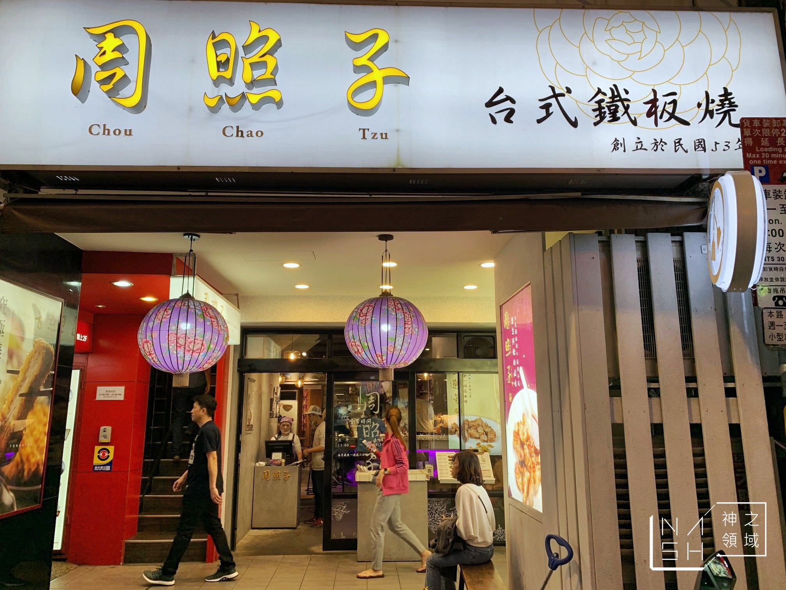

周照子鐵板燒
周照子鐵板燒介紹

民國五十年代...
在台北西門町有三個知名賣飲料的小攤...
甘蔗西施的甘蔗汁、西瓜大王的西瓜汁、以及黑面蔡的楊桃汁...
其中..
甘蔗西施即是指 周照子 女士
周照子 女士為寧夏夜市鐵板燒老攤「雙連鐵板燒」
（現為 香連鐵板料理）創辦人 潘扶旺的母親，亦是第二代經營者 潘威達的阿嬤…
「周照子鐵板清粥小菜」便是威達為想念阿嬤所開的…一家有文化也有創新精神的小餐廳..
早期的臺灣深受農村文化與日本文化影響...
「周照子」便是為了以年輕人能夠接受的方式呈現當時的古早味...
蕃薯糜代表了台灣人早期生活的共同記憶，阿嬤當年每天清晨去市場載甘蔗前，
便會將蕃薯糜煮好放在桌上，待她的寶貝家人醒來便有美味營養的早餐可吃。
鐵板燒則是威達父母在寧夏夜市攤車上從入夜到清晨不畏高溫炒著一道又一道的鐵板燒料理，
才能將威達給拉拔長大。
結合了兩個世代的回憶，於是「周照子鐵板清粥小菜」便這麼誔生了。
在「周照子」以低碳輕食的理念..運用鐵板燒烹調的方式，呈現能代表台灣古早味的清粥小菜..
一碗熱呼呼的地瓜稀飯及現點現做的鐵板和漢料理的融合，
足以滿足所有饕客的心。此外當然還有不能少的就是古法製作的甘蔗汁。
來到「周照子」，您將會注意到易於親近、撫慰人心的菜餚以及無價的濃厚人情味！
扶旺號
香連鐵板燒
甘妹弄堂
心得